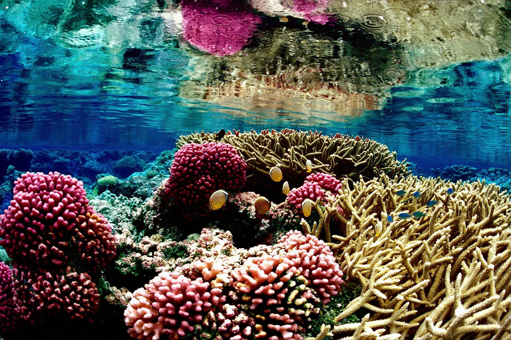
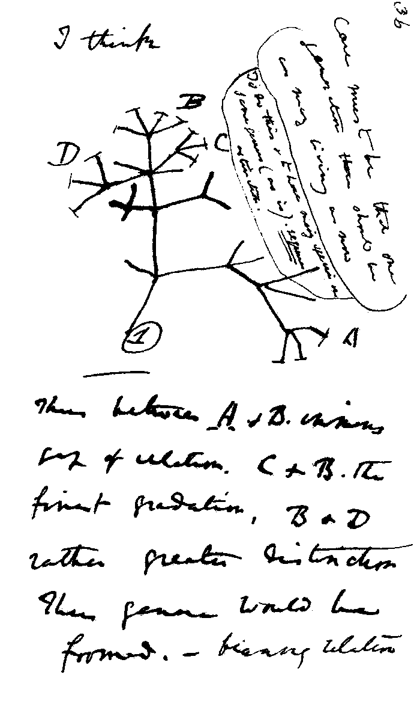
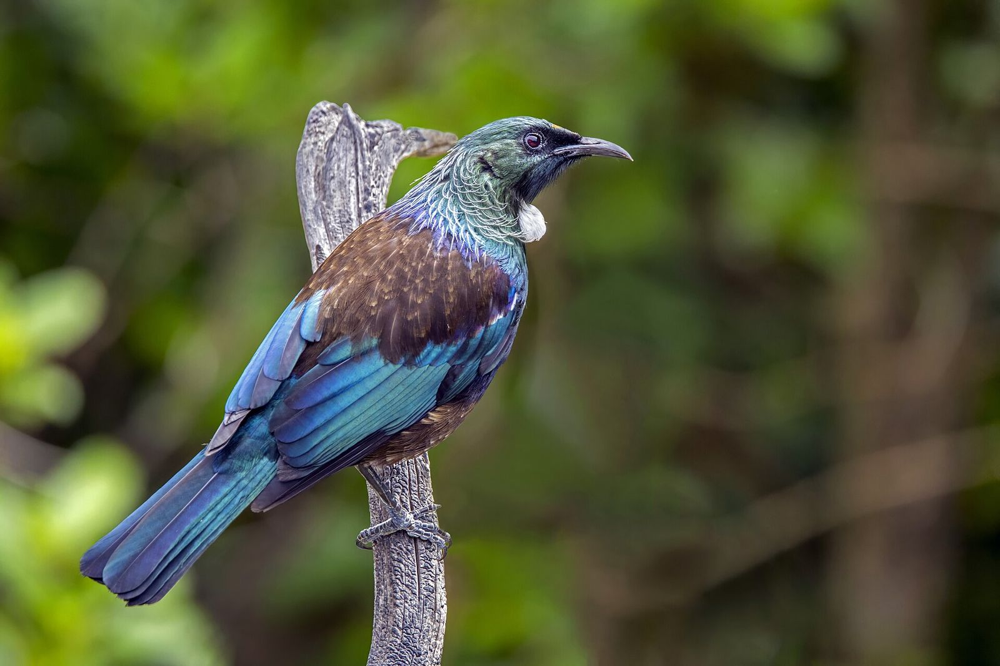
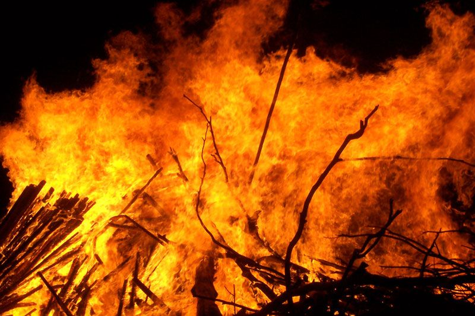
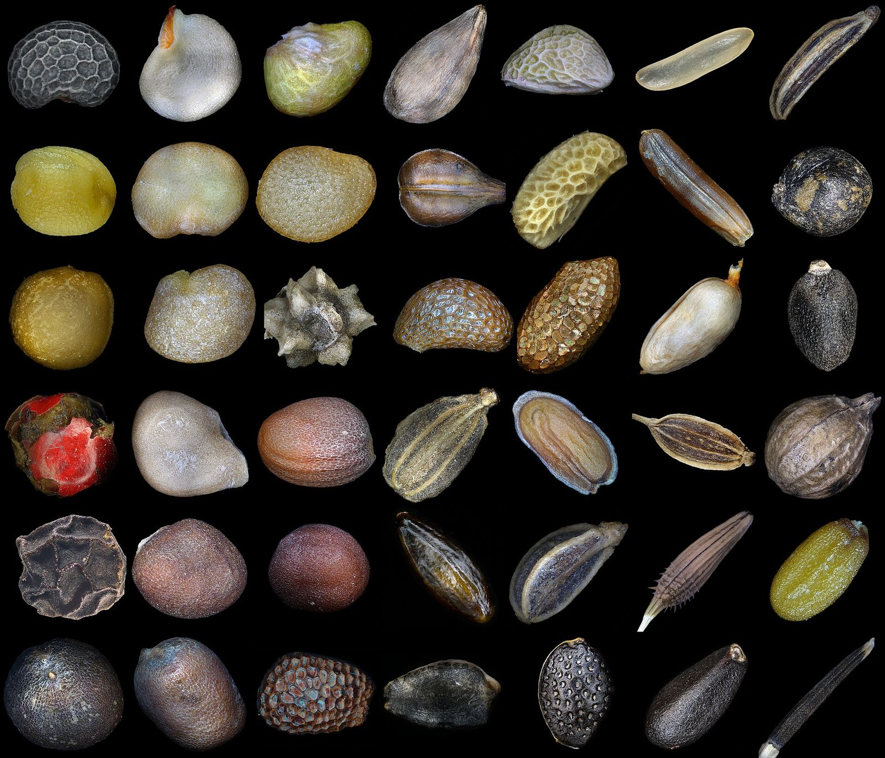
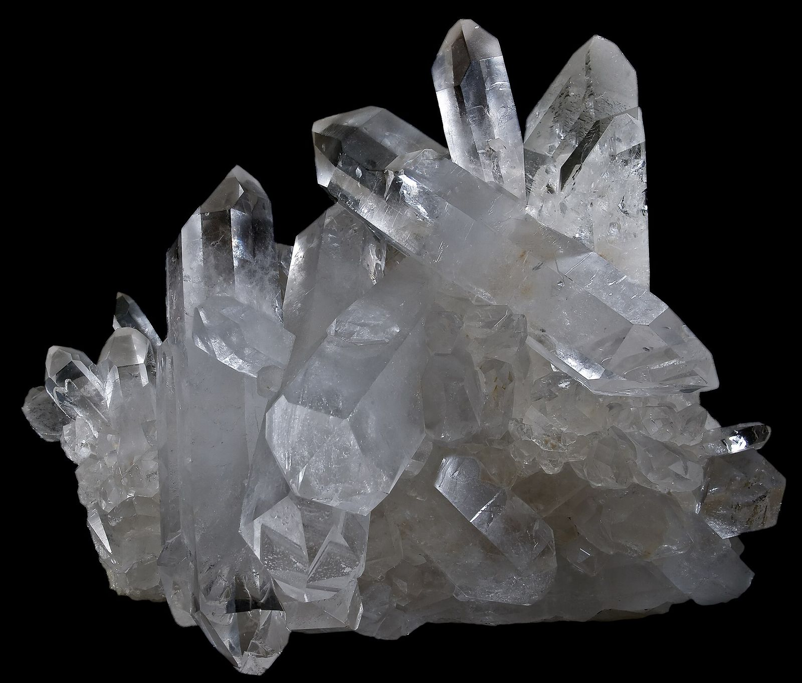
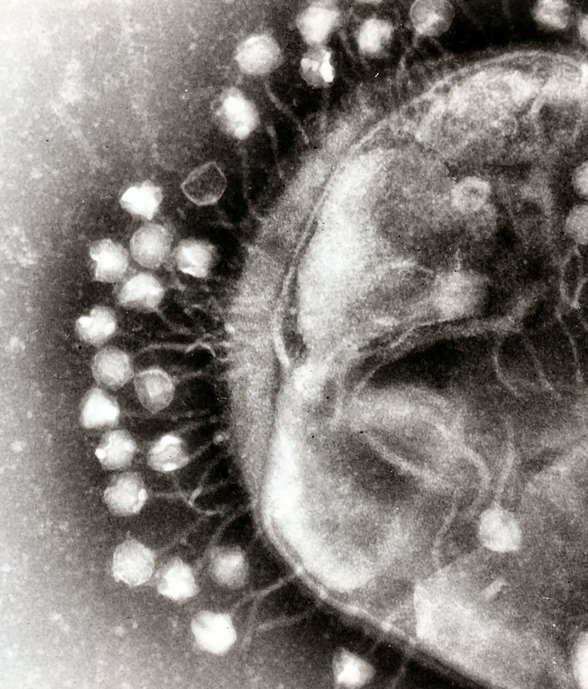
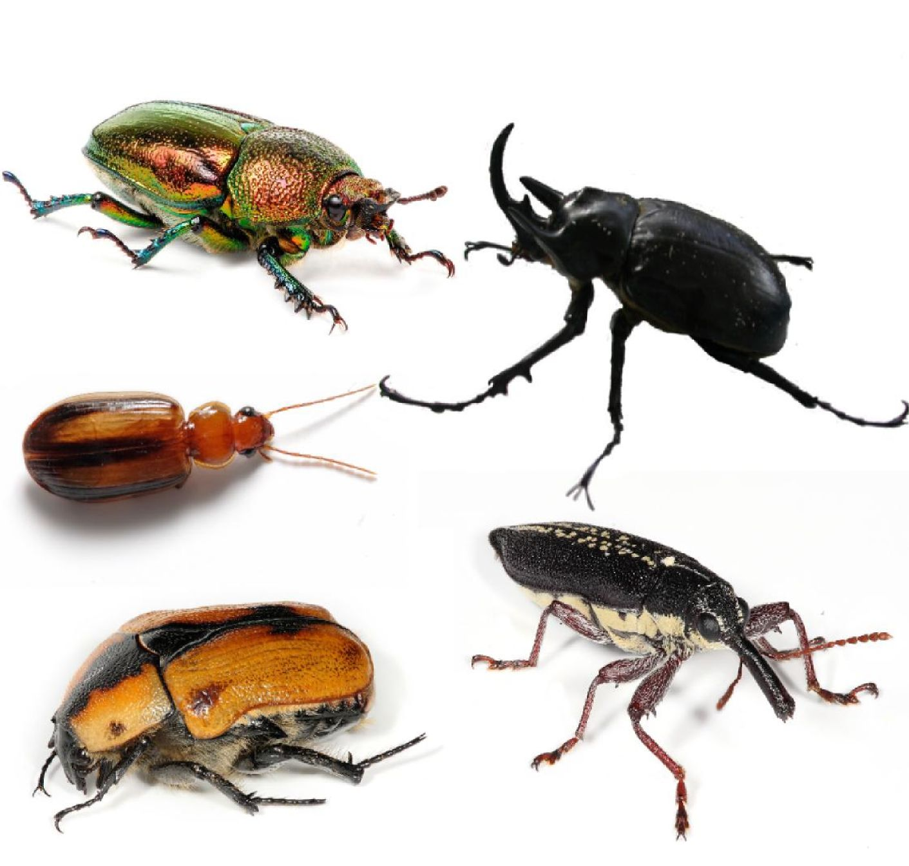

Year 9 Science · Lesson 1
Are we related?
Living things and biodiversity
Coral reef, Palmyra Atoll. U.S. Fish and Wildlife Service, Pacific Region. CC BY 2.0

The big question
In 1837 Charles Darwin drew this in his notebook
Above the sketch he wrote two words: I think.
Each branch is a kind of living thing. Where two branches meet is a common ancestor.
If every living thing sits somewhere on one tree, then we are all related. This unit is about the evidence.


This unit
Every living thing on Earth is related through DNA
Statement of inquiry. Relationships between living things and the environment lead to adaptation and diversity.
- Grouping living things. Classifying organisms by shared characteristics.
- Adaptations. Structural, behavioural and physiological.
- Natural selection. Why some adaptations win.
- DNA. The molecule that connects all life, through 3.5 billion years.
Assessment
Topic test, Criterion A (Knowing and understanding), end of Week 6.
Do now
Lab manual p2 to p3. Read the Know and Do checklist. Tick where you are today. We'll come back to it before the test.

Tūī · Prosthemadera novaeseelandiae
It's alive. How do you know?
Charles J. Sharp. CC BY-SA 4.0
_Tiritiri_Matangi_2.jpg){kind=link}
Reminder from Year 7
MRS C GREN: the eight life processes
Mrs C. Gren needs a first name. It has to start with C, for Cells. Class vote!
Living or non-living?
Which MRS C GREN processes does each one show?

Fire
Grows, moves, uses oxygen. But no cells. Non-living.

Seeds
Made of cells, respiring slowly, waiting to grow. Living.

Crystal
Can grow, but no cells, no respiration. Non-living.

Virus
No cells. Only reproduces inside a host cell. Scientists disagree!
Fire: Fir0002, CC BY-SA 3.0. Seeds: Alexander Klepnev, CC BY 4.0. Quartz: Didier Descouens, CC BY-SA 4.0. Viruses on a bacterium: Graham Beards, CC BY-SA 3.0.


Key words
Biodiversity and species
Biodiversity is the different kinds of living things in an area.
A species is a group of living things that share common characteristics and can breed together to produce fertile offspring.
Examples: tūī, pīwakawaka (fantail), humans.
A tūī and a pīwakawaka are both birds, but they can't breed together. Different species.
Lab manual p6
How many species are there on Earth?
Write down your guess first.
8.7 million
The best estimate (2011). Other estimates run from 5 million to 1 trillion. We don't know.
≈ 2 million
Described so far, and rising. Most are insects.


Watch
The amazing diversity of life
BBC Earth: 50 Top Natural History Moments, 50 to 41.
As you watch, note three living things and one feature that helps each one survive. Hold on to them: those features are next week's topic.
Optional · Lab manual p4 to p5
Set up: germinating seeds
Do offspring look like their parents? Plant seeds now and watch them over the next few weeks.
- Label your dish: name, class, date.
- Two moist cotton pads. Spray, don't flood.
- 5 to 10 seeds, spread so they don't touch.
- Somewhere warm and light. Check and spray every lesson.
Exit question
Is a virus alive?
Give one reason for yes and one reason for no. Use MRS C GREN.
Viruses attacking a bacterium. Graham Beards. CC BY-SA 3.0
Away today?
Missed this lesson? Catch up here
- Read through these slides. Copy the definitions of biodiversity and species into your book.
- Write out MRS C GREN with one example of each process from an animal you like.
- Lab manual p2 to p3: tick the Know and Do checklist.
- Lab manual p6: read How many species are there?
- Answer the exit question in your book: is a virus alive?